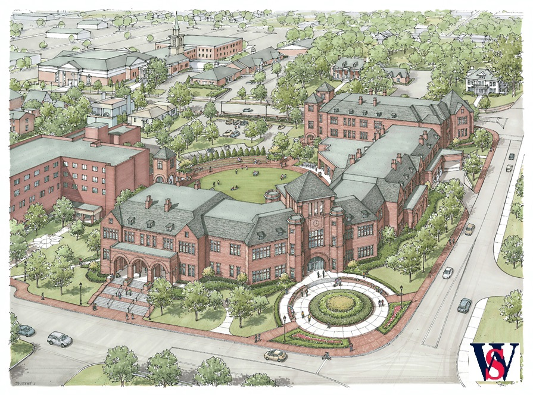

Greeneville WALKS
Take an inspiring stroll through historic,
downtown Greeneville and learn about all that
nature has to offer!

ABOUT: Here you will find information concerning the Greeneville
downtown area as well as directional guides for the Greeneville WALKS
Arboretum. Greeneville WALKS will consist of several brief walking
tours that originate from the Walters State Niswonger Campus. The walks
highlight local historical interests as well as provide tree, shrub and
plant identification for nature enthusiasts. This interactive website
will provide a guided virtual walking tour using area tree species as an
educational focal point for the area's rich history. Each walking trail
will showcase the town's trees as the silent sentinels of history, art,
literature, food and music. In the future we hope to provide additional
information concerning Greeneville's past, present, and future such as
history, nature, current events, local government and business activities
as well as information about area national parks and civil war trails.
This is a place where our community of learners can come together.
External Links:
Webquest Savanger Hunt
Tennesse Urban Forestry Council (TUFC)
Walters State Campus Enhancement
Town of Greeneville